측량및지형공간정보산업기사 (2019-04-27 기출문제)
1과목: 응용측량
1. 노선측량의 도로기점에서 곡선시점까지의 거리가 1312.5m, 접선길이가 176.4m, 곡선길이가 320m라면 도로기점에서 곡선종점까지의 거리는?
- 1488.9m
- 1560.7m
- 1591.5m
- 1632.5m
(정답률: 53%)

2. 그림과 같이 두 직선의 교점에 장애물이 있어 C, D 측점에서 방향각(α, β, Υ)을 관측하였다. 교각(I)는? (단, α=228°30‘, β=82°00’, Υ=136°30')
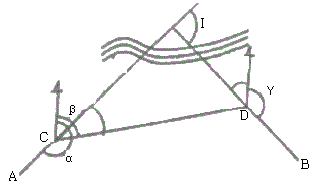
- 54°30‘
- 88°00‘
- 92°00‘
- 146°30‘
(정답률: 50%)
3. 편각법에 의한 단곡선의 설치에 있어서 그림과 같이 호의 길이 10m를 현의 길이 10m로 간주하는 경우, δ1과 δ2의 차이는 얼마인가? (단, 단곡선의 반지름(R)은 120m이다.)
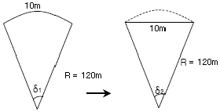
- 약 1“
- 약 5“
- 약 10“
- 약 15“
(정답률: 63%)
4. 클로소이드 공식 사이의 관계가 틀린 것은? (단, R:곡률반지름, L:완화곡선길이, τ:접선각, A:매개변수);
- RㆍL=A2
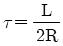
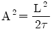
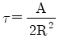
(정답률: 55%)
5. 완화곡선에 대한 설명으로 옳지 않은 것은?
- 모든 클로소이드는 닮은꼴이며 클로소이드 요소는 길이의 단위를 가진 것과 단위가 없는 것이 있다.
- 클로소이드의 형식은 S형, 복합형, 기본형 등이 있다.
- 완화곡선의 반지름은 시점에서 무한대, 종점에서 원곡선의 반지름으로 된다.
- 완화곡선의 접선은 시점에서 원호에, 종점에서 직선에 접한다.
(정답률: 73%)
6. 터널측량에서 지표면상의 좌표와 터널 안의 좌표를 같게 하기 위한 측량은?
- 터널 내ㆍ외 연결측량
- 터널 내 좌표측량
- 지하수준측량
- 지상측량
(정답률: 80%)
7. 하천의 유량관측 방법에 대한 설명으로 틀린 것은?
- 수로내에 둑을 설치하고, 사방댐의 월류량 공식을 이용하여 유량을 구할 수 있다.
- 수위유량곡선을 만들어서 필요한 수위에 대한 유량을 그래프 상에서 구할 수 있다.
- 직류부로서 흐름이 일정하고, 하상경사가 일정한 곳을 택해 관측하는 것이 좋다.
- 수위의 변화에 의해 하천 횡단면 형상이 급변하는 곳을 택하여 관측하는 것이 좋다.
(정답률: 82%)
8. 터널의 시점(A)과 종점(B)을 결정하기 위하여 폐합다각측량을 한 결과 두 점의 좌표가 표와 같다. A에서 굴착하여야 할 터널 중심선의 방위각은?
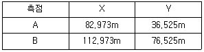
- 53°7‘48“
- 143°7‘48“
- 233°7‘48“
- 323°7‘48“
(정답률: 53%)
9. 단곡선에서 곡선반지름이 100m, 곡선길이가 117.809m일 때 교각은?
- 1°10‘41“
- 11°46‘51“
- 67°29‘58“
- 70°41‘7“
(정답률: 65%)
10. 종ㆍ횡단 고저측량에 의하여 얻어진 각측점의 단면적에 의하여 작성되는 유토곡선의 성질에 대한 설명으로 옳지 않은 것은?
- 유토곡선의 하향 구간은 성토구간이고 상향구간은 절토구간이다.
- 곡선의 저점은 절토에서 성토로, 정점은 성토에서 절토로 바뀌는 점이다.
- 곡선과 평행선(기선)이 교차하는 점에서는 절토량과 성토량이 거의 같다.
- 절토와 성토의 평균운반거리는 유토곡선 토량의 1/2점간의 거리로 한다.
(정답률: 64%)
11. 그림과 같은 도형의 면적은?
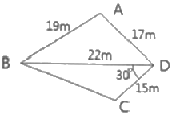
- 235.3m2
- 238.6m2
- 255.3m2
- 258.3m2
(정답률: 61%)
12. 하천의 평균유속 측정법 중 2점법에 대한 설명으로 옳은 것은?
- 수면과 수저의 유속을 측정 후 평균한다.
- 수명으로부터 수심의 40%, 60% 지점의 유속을 측정 후 평균한다.
- 수명으로부터 수심의 20%, 80% 지점의 유속을 측정 후 평균한다.
- 수명으로부터 수심의 10%, 90% 지점의 유속을 측정 후 평균한다.
(정답률: 84%)
13. 수위표(양수표)에 대한 설명으로 틀린 것은?
- 수위표의 영위는 최저수위보다 하위에 있어야 한다.
- 수위표 눈금의 최고위는 최대 홍수위보다 높아야 한다.
- 수위표의 표고는 그 하천 하류부의 가장 낮은 곳을 높이의 기준으로 정한다.
- 홍수 후에는 부근 수준점과 연결하여 그 표고를 확인해야 한다.
(정답률: 66%)
14. 곡선에 둘러싸인 부분의 면적을 계산할 때 이용되는 방법으로 적합하지 않은 것은?
- 모눈종이(grid)법
- 구적기에 의한 방법
- 좌표에 의한 계산법
- 횡선(strip)법
(정답률: 55%)
15. 거리관측의 정확도를 1/M로 관측하여 토지의 면적을 계산하였다면 면적의 정확도는 약 얼마인가?
- 1/√M
- 1/M
- 2/M
- 1/M2
(정답률: 54%)
16. 그림과 같은 경우에 심프슨 제1법칙에 의한 면적을 구하는 식으로 옳은 것은?
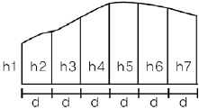
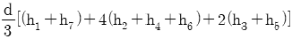
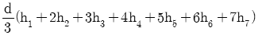
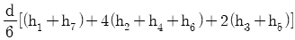
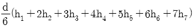
(정답률: 77%)
17. 각과 위치에 의한 경관도의 정량화에서 시설물의 한 점을 시준할 때 시준선과 시설물 축선이 이루는 각(α)은 크기에 따라 입체감에 변화를 주는데 다음 중 입체감있게 계획이 잘된 경관을 얻을 수 있는 범위로 가장 적합한 것은?
- 10°＜α≤30°
- 30°＜α≤50°
- 40°＜α≤60°
- 50°＜α≤70°
(정답률: 80%)
18. 해안선측량은 해면이 약최고고조면에 달하였을 때 육지와 해면과의 경계를 결정하기 위한 측량방법을 말하는데 다음 중 해안선측량 방법에 해당하는 것은?
- 천부지층탐사
- GPS측량
- 수중촬영
- 해저면영상조사
(정답률: 50%)
19. 그림은 택지조성지역의 표고값을 표시하고 있다. 이 지역의 토공량(v)과 토공량의 균형을 맞추기 위한 계획고(h)는? (단, 표고의 단위는 m이고, 분할된 각 면적은 동일하다.)
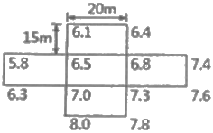
- V=6225m3, h=4.15m
- V=10365m3, h=4.15m
- V=6225m3, h=6.91m
- V=10365m3, h=6.91m
(정답률: 51%)
20. 측면주사음량탐지기(Side Scan Sonar)를 이용한 해저면영상조사에서 탐지할 수 없는 것은?
- 수중의 암초
- 노출암
- 해저케이블
- 바다에 침몰한 선박
(정답률: 70%)
2과목: 사진측량 및 원격탐사
21. 원격탐사 시스템에서 시스템 자체특성이나 지구자전 및 곡률에 의해 나타나는 내부기하오차로 센서특징과 천문력 자료의 분석을 통해 때때로 보정될 수 있는 영상 내 기하왜곡이 아닌 것은?
- 지구자전효과에 의한 흼현상
- 탑재체의 고도와 자세 변화
- 스캐닝 시스템에 의한 접선반향 축척 왜곡
- 스캐닝 시스템에 의한 지상해상도 셀 크기의 변화
(정답률: 46%)
22. 항공사진측량에 의하여 제작된 수치지도의 위치정확도에 영향을 주는 요소와 가장 거리가 먼 것은?
- 사진의 축척
- 도화기의 정확도
- 지도 레이어의 개수
- 지상기준점의 정확도
(정답률: 70%)
23. 항공사진을 이용한 지형도 제작 단계를 크기 3단계로 구분할 때 작업 순서로 옳은 것은?
- 촬영→기준점측량→세부도화
- 세부도화→촬영→기준점측량
- 세부도화→기준점측량→촬영
- 촬영→세부도화→기준점측량
(정답률: 76%)
24. 사진좌표계를 결정하는데 필요하지 않은 사항은?
- 사진지표
- 좌표변환식
- 주점의 좌표
- 연직점의 좌표
(정답률: 50%)
25. 영상지도 제작에 사용되는 가장 적합한 영상은?
- 경사 영상
- 파노라믹 영상
- 정사 영상
- 지상 영상
(정답률: 80%)
26. 레이저 스캐너와 GPS/INS로 구성되어 수치표고모델(DEM)을 제작하기에 용이한 측량시스템은?
- LIDAR
- RADAR
- SAR
- SLAR
(정답률: 70%)
27. 시차차에 관한 설명 중 옳지 않은 것은?
- 시차차의 크기는 촬영고도에 반비례한다.
- 시차차의 크기는 초점거리에 비례한다.
- 시차차의 크기는 사진축척의 분모수에 반비례한다.
- 시차차의 크기는 촬영기선장에 비례한다.
(정답률: 35%)
28. 원격탐사 시스템에서 90°의 총 시야각과 10000m의 고도를 가진 스캐닝 시스템의 지상 관측폭은?
- 10000m
- 20000m
- 30000m
- 40000m
(정답률: 54%)
29. 절대(대지)표정과 관계가 있는 것은?
- 표고결정, 시차측정
- 축척결정, 위치결정
- 표정점 측량, 내부표정
- 시차측량, 방위결정
(정답률: 65%)
30. 다음 중 우리나라가 운영하고 있는 인공위성은?
- IKONOS
- KOMPSAT
- KVR
- LANDSAT
(정답률: 80%)
31. 평지를 촬영고도 1500m로 촬영한 연직사진이 있다. 이 밀착사진상에 있는 건물 상단과 하단 간의 시차차를 관측한 결과 1mm였다면 이 건물의 높이는? (단, 사진기의 초점거리는 15cm, 사진의 크기는 23cm×23cm, 종중복도 60%이다.)
- 10m
- 12.3m
- 15m
- 16.3m
(정답률: 45%)
32. 사진측량용 카메라의 렌즈와 일반 카메라의 렌즈를 비교한 것으로 옳지 않은 것은?
- 사진측량용 카메라 렌즈의 초점거리가 짧다.
- 사진측량용 카메라 렌즈의 수차(distortion)가 작다.
- 사진측량용 카메라 렌즈의 해상력과 선명도가 좋다.
- 사진측량용 카메라 렌즈의 화각이 크다.
(정답률: 69%)
33. 초점거리 150mm, 사진크기 23cm×23cm의 항공사진기로 종중복도 70%, 횡중복도 40%로 촬영하면 기선고도비는?
- 0.46
- 0.61
- 0.92
- 1.07
(정답률: 41%)
34. 축척 1:20000의 항공사진으로 면적 1000km2의 지역을 종중복도 60%, 횡중복도 30%로 촬영하려고 할 경우 필요한 사진매수는? (단, 사진의 크기는 23cm×23cm로 매수의 안전을 30%로 가정한다.)
- 170매
- 190매
- 220매
- 250매
(정답률: 52%)
35. 각각의 입체모형을 단위로 접합점과 기준점을 이용하여 여러 입체모형의 좌표들을 조정법에 의한 절대좌표로 환산하는 방법은?
- Aeropolygon법
- Independent Model법
- Bundle Adjustment법
- Block Adjustment법
(정답률: 60%)
36. 원격탐사에 대한 설명으로 옳지 않은 것은?
- 자료수집장비로는 수동적 센서와 능동적 센서가 있으며 Laser 거리관측기는 수동적 센서로 분류된다.
- 원격탐사 자료는 물체의 반사 또는 방사의 스펙트럴 특성에 의존한다.
- 자료의 양은 대단히 많으며 불필요한 자료가 포함되어 있을 수 있다.
- 탐측된 자료가 즉시 이용될 수 있으며 재해 및 환경문제 해결에 편리하다.
(정답률: 67%)
37. 해석적 내부표정에서의 주된 작업내용은?
- 3차원 가상 좌표를 계산하는 작업
- 표고결정 및 경사를 결정하는 작업
- 1개의 통일된 블록좌표계로 변환하는 작업
- 관측된 상좌표로부터 사진좌표로 변화하는 작업
(정답률: 57%)
38. 항공사진의 촬영에 대한 설명으로 옳지 않은 것은?
- 같은 사진기를 이용하여 촬영할 경우, 촬영고도와 촬영면적은 반비례한다.
- 같은 사진기를 이용하여 촬영할 경우, 촬영고도와 촬영축척은 반비례한다.
- 같은 사진기를 이용하여 촬영할 경우, 촬영고도와 촬영되는 폭은 비례한다.
- 같은 사진기를 이용하여 촬영할 경우, 촬영고도를 2배로 하면 사진매수는 1/4로 줄어든다.
(정답률: 47%)
39. 원격탐사 자료처리 중 기하학적 보정에 해당되는 것은?
- 영상대조비 개선
- 영상의 밝기 조절
- 화소의 노이즈 제거
- 지표기복에 의한 왜곡 제거
(정답률: 71%)
40. 다음 중 항공사진을 재촬영하여야 할 경우가 아닌 것은?
- 인접한 사진의 축척이 현저한 차이가 있을 때
- 인접코스간의 종복도가 표고의 최고점에서 3% 정도일 때
- 항공기의 고도가 계획 촬영고도의 3%정도 벗어날 때
- 구름이 사진에 나타날 때
(정답률: 61%)
3과목: GIS 및 GPS
41. 객체지향 용어인 다형성(polymorphism)에 대한 설명으로 틀린 것은?
- 여러 개의 형태를 가진다는 의미의 그리스어에서 유래되었다.
- 동일한 이름의 함수를 여러 개 만드는 기업인 오버로딩(overloading)도 다형성의 형태이다.
- 동일한 객체내의 또 다른 인터페이스를 통해서 사용자가 원하는 매소드와 프로퍼티에 접근하는 것을 뜻한다.
- 여러 개의 서로 다른 클래스가 동일한 이름의 인터페이스를 지원하는 것도 다형성이다.
(정답률: 44%)
42. A점에 대한 GMSS 관측결과로 타원체고가 123.456m, 지오이드고가 +23.456m이었다면 지오이드면에서 A점까지의 높이는?
- 76.544m
- 100.000m
- 146.912m
- 170.368m
(정답률: 71%)
43. 지리정보시스템(GIS)의 기능과 가장 거리가 먼 것은?
- 공간자료의 정보화
- 자료의 시공간적 분석
- 의사결정 지원
- 공간정보의 보안 강화
(정답률: 68%)
44. 태양폭풍 영향으로 GNSS 위성신호의 전파에 교란을 발생시키는 대기충은?
- 전리층
- 대류권
- 열군
- 권계면
(정답률: 72%)
45. 쿼드 트리(quadtree)는 한 공간을 몇 개의 자식노드로 분할하는가?
- 2
- 4
- 8
- 16
(정답률: 69%)
46. 지리정보시스템(GIS)과 관련된 용어의 설명으로 옳지 않은 것은?
- 위치정보는 지물 및 대상물의 위치에 대한 정보로서 위치는 절대위치(실제공간)와 상대위치(모형공간)가 있다.
- 도형정보는 지형ㆍ지물 또는 대상물의 위치에 대한 자료로서, 지도 또는 그림으로 표현되는 경우가 많다.
- 영상정보는 항공사진, 인공위성영상, 비디오 및 각종 영상의 수치 처리에 의해 취득된 정보이다.
- 속성정보는 대상물의 자연, 인문, 사회, 행정, 경제, 환경적 특성을 도형으로 나타내는 지도정보로서 지형공간적 분석은 불가능한 단점이 있다.
(정답률: 71%)
47. 위성의 배치에 따른 정확도의 영향을 DOP에 대한 설명으로 틀린 것은?
- PDOP:위치 정밀도 저하율
- HDOP:수평위치 정밀도 저하율
- VDOP:수직위치 정밀도 저하율
- TDOP:기하학적 정밀도 저하율
(정답률: 62%)
48. 지리정보시스템(GIS)의 공간데이터 중 래스터자료 형태로 짝지어진 것은?
- GPD측량결과, 항공사진
- 항공사진, 위성영상
- 수치지도, 항공사진
- 수치지도, 위성영상
(정답률: 64%)
49. 2개 이상의 실측값을 이용하여 그 사이에 있는 임의의 위치에 있는 지점의 값을 추정하는 방법으로, 표고점을 이용한 등고선의 구축이나 몇 개 지점의 온도자료를 이용한 대상지 전체 온도 지도 작성 등에 활용되는 공간정보 분석 방법은?
- 보간법
- 버퍼링
- 중력모델
- 일반화
(정답률: 72%)
50. 국가 위성기준점을 활용하여 실시간으로 높은 정확도의 3차원 위치를 결정할 수 있는 측량방법은?
- Static GPS측량
- DGPS측량
- VRS측량
- VLBI측량
(정답률: 55%)
51. 지리정보시스템(GIS)의 구축 시 실 세계의 참값과 구축된 시스템의 값을 비교ㆍ분석하기 위하여 시스템에서 추출한 속성값과 현장검사에 의한 속성의 참값을 행렬로 나타낸 것으로 데이터의 속성에 대한 정확도를 평가하는데 매우 효과적인 것은?
- 오차행렬(error matrix)
- 카파행렬(kappa matrix)
- 표본행렬(sample matrix)
- 검증행렬(verifying matrix)
(정답률: 61%)
52. 다음 정보 중 메타데이터의 항목이 아닌 것은?
- 자료의 정확도
- 토지의 식생정보
- 사용된 지도투영법
- 지도의 지리적 범위
(정답률: 63%)
53. 지형공간정보체계의 자료구조 중 벡터형 자료구조의 특징이 아닌 것은?
- 복잡한 지형의 묘사가 원활하다.
- 그래픽의 정확도가 높다.
- 그래픽과 관련된 속성정보의 추출 및 일반화, 갱신 등이 용이하다.
- 데이터베이스 구조가 단순하다.
(정답률: 80%)
54. 아래의 관측값의 경중평균중심은 얼마인가? (단, 좌표=x, y)
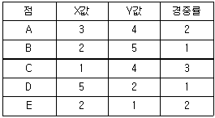
- (2.2, 3.2)
- (2.4, 3.2)
- (1.6, 1.8)
- (1.3, 1.6)
(정답률: 55%)
55. 지리정보시스템(GIS)의 자료입력용 하드웨어가 아닌 것은?
- 스캐너
- 플로터
- 디지타이저
- 해석도화기
(정답률: 63%)
56. 디지타이저를 이용한 수치지도의 입력과정에서 발생 가능한 오차의 유형으로 거리가 먼 것은?
- 기계적 오류로 인해 실선이 파선으로 디지타이징 되는 변질오차
- 온도나 습도 변화로 인한 종이지도의 신축으로 발생하는 위치오차
- 입력자의 실수로 인해 발생하는 Overshooting이나 Undershooting
- 작업중 디지타이저 상의 종이지도를 탈부착할 경우 발생하는 위치오차
(정답률: 45%)
57. 지리정보시스템(GIS)에서 사용되는 관계형 데이터베이스 모형의 특징에 해당되지 않는 것은?
- 정보를 추출하기 위한 질의의 형태에 제한이 없다.
- 모형 구성이 단순하고 이해가 빠르다.
- 테이블의 구성이 자유롭다.
- 테이블의 수가 상대적으로 적어 저장용량을 상대적으로 적게 차지한다.
(정답률: 62%)
58. 공공시설물이나 대규모의 공장, 관로망 등에 대한 지도 및 도면 등 제반정보를 수치입력하여 시설물에 대한 효율적인 운영관리를 하는 종합적인 관리체계를 무엇이라 하는가?
- CAD/CAM
- AM(Automatic Mapping)
- FM(Facility Management)
- SIS(Surveying Information System)
(정답률: 64%)
59. 동일한 경계를 갖는 두 개의 다각형을 중첩하였을 때 입력오차 등에 의하여 완전중첩되지 않고 속성이 결여된 다각형이 발생하는 경우가 있다. 이를 무엇이라 하는가?
- Margin
- Undershoot
- Sliver
- Overshoot
(정답률: 61%)
60. 각 기관에서 생산한 수치지도를 어느 곳에 집중하여, 인터넷으로 검색ㆍ구입할 수 있는 곳을 무엇이라고 하는가?
- 공간자료 정보센터(spatial data clearinghouse)
- 공간자료 데이터베이스(spatial database)
- 공간 기준계(spatial reference system)
- 데이터베이스 관리시스템(database management system)
(정답률: 68%)
4과목: 측량학
61. 갑, 을, 병 3사람이 기선측량을 한 결과 다음과 같은 결과를 얻었다면 최확값은?
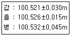
- 100.521m
- 100.524m
- 100.526m
- 100.531m
(정답률: 54%)
62. 광파거리측량기(EDM)을 사용하여 두 점간의 거리를 관측한 결과 1234.56m이었다. 관측시의 대기굴절률이 1.000310이었다면 기상보정후의 거리는? (단, 기계에서 채용한 표준대기굴절률은 1.000325이다.)
- 1234.54m
- 1234.56m
- 1234.58m
- 1234.60m
(정답률: 39%)
63. 평면직각좌표가 (x1, y1)인 P1을 기준으로 관측한 P2의 극좌표(S, T)가 다음과 같을 때 P2의 평면직각좌표는? (단, x축은 북, y축은 동, T는 x축으로부터 우회로 측정한 각이다.)
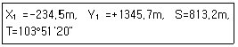
- x2=-39.8m, y2=556.2m
- x2=-194.7m, y2=789.5m
- x2=-274.3m, y2=1901.9m
- x2=-429.2m, y2=2135.2m
(정답률: 41%)
64. 1회 관측에서 ±3mm의 우연오차가 발생하였을 때 20회 관측시 우연오차는?
- ±6.7mm
- ±13.4mm
- ±34.6mm
- ±60.0mm
(정답률: 61%)
65. 축척 1:3000의 지형도를 만들기 위해 같은 도면크기의 축척 1:500의 지형도를 이용한다면 1:3000 지형도의 1도면에 필요한 1:500 지형도는?
- 36매
- 25매
- 12매
- 6매
(정답률: 69%)
66. 지반고 145.25m의 A지점에 토털스테이션을 기계고 1.25m 높이로 세워 B지점을 시준하여 사거리 172.30m, 타겟높이 1.65m, 연직각 -20°11‘을 얻었다면 B지점의 지반고는?
- 71.33m
- 85.40m
- 217.97m
- 221.67m
(정답률: 50%)
67. 기설치된 삼각점을 이용하여 삼각측량을 할 경우 작업순서로 가장 적합한 것은?
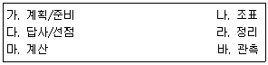
- 가→다→나→바→마→라
- 가→나→다→마→바→라
- 가→나→바→마→다→라
- 가→다→나→마→바→라
(정답률: 77%)
68. 삼각측량에서 그림과 같은 사변형망의 각조건식 수는?
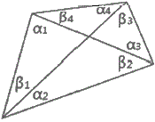
- 1개
- 2개
- 3개
- 4개
(정답률: 52%)
69. 어느 폐합 트래버스의 전체 관측선의 길이가 1200m일 때 폐압비는 1/6000으로 한다면 축척 1:500의 도면에서 허용되는 최대오차는?
- ±0.2mm
- ±0.4mm
- ±0.8mm
- ±1.0mm
(정답률: 35%)
70. 방위가 N32°38'⑤"W인 측선의 역방위각은?
- 32°38‘⑤“
- 57°21‘55
- 147°21'55“
- 212°38' ⑤“
(정답률: 52%)
71. 삼각수준측량에서 지구가 구면이기 때문에 생기는 오차의 보정량은? (단, D:수평거리, R:지구 반지름)
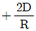
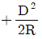
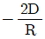
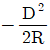
(정답률: 58%)
72. 축척1:25000 지형도에서 표고 1⑤m와 348m사이에 주곡선 간격의 등고선의 수는?
- 50개
- 49개
- 25개
- 24개
(정답률: 48%)
73. 각 측량의 기계적 오차 중 망원경의 정ㆍ반위치에서 측정값을 평균해도 소거되지 않는 오차는?
- 연직축 오차
- 시준축 오차
- 수평축 오차
- 편심 오차
(정답률: 65%)
74. 오차 방향과 크기를 산출하여 소거할 수 있는 오차는?
- 우연오차
- 착오
- 개인오차
- 정오차
(정답률: 68%)
75. 무단으로 측량성과 또는 측량기록을 복제한 자에 대한 벌칙 기준으로 옳은 것은?
- 3년 이하의 징역 또는 3천만원 이하의 벌금
- 2년 이하의 징역 또는 2천만원 이하의 벌금
- 1년 이하의 징역 또는 1천만원 이하의 벌금
- 300만원 이하의 과태요
(정답률: 45%)
76. 측량기기의 성능검사 주로 옳은 것은?
- 레벨:3년
- 트랜싯 1년
- 거리측정기:4년
- 토털스테이션:2년
(정답률: 79%)
77. 공공측량에 관한 공공측량 작업계획서를 작성하여야 하는 자는?
- 측량협회
- 측량업자
- 공공측량시행자
- 국토지리정보원장
(정답률: 71%)
78. 모든 측량의 기초가 되는 공간정보를 제공하기 위하여 국토교통부장관이 실시하는 측량은?
- 국가측량
- 기본측량
- 기초측량
- 공공측량
(정답률: 69%)
79. 측량기준점에 대한 설명 중 옳지 않은 것은?
- 측량기준점은 국가기준점, 공공기준점, 지적기준점으로 구분된다.
- 국토교통부장관은 필요하다고 인정하는 경우에는 직접 측량기준점표지의 현황을 조사할 수 있다.
- 측량기준점표지의 형상, 규격, 관리방법 등에 필요한 사항은 대통령령으로 정한다.
- 측량기준점을 정한 자는 측량기준점표지를 설치하고 관리하여야 한다.
(정답률: 54%)
80. 기본측량의 측량성과 고시에 포함되어야 하는 사항이 아닌 것은?
- 측량의 종류
- 측량성과의 보관장소
- 설치한 측량기준점의 수
- 사용측량기기의 종류 및 성능
(정답률: 54%)

여기서, 도로기점에서 곡선시점까지의 거리와 접선길이를 이용하여 곡률반경을 구할 수 있습니다.
$$R = frac{(1312.5)^2 + (176.4)^2}{2 times 176.4} = 10000.8m$$
따라서, 곡선길이와 곡률반경을 이용하여 중앙각을 구할 수 있습니다.
$$theta = frac{320}{10000.8} = 0.0319rad$$
마지막으로, 중앙각과 곡률반경을 이용하여 도로기점에서 곡선종점까지의 거리를 구할 수 있습니다.
$$L = Rtheta = 10000.8 times 0.0319 = 319.2m$$
따라서, 도로기점에서 곡선종점까지의 거리는 1312.5m + 319.2m = 1632.5m 이 됩니다.